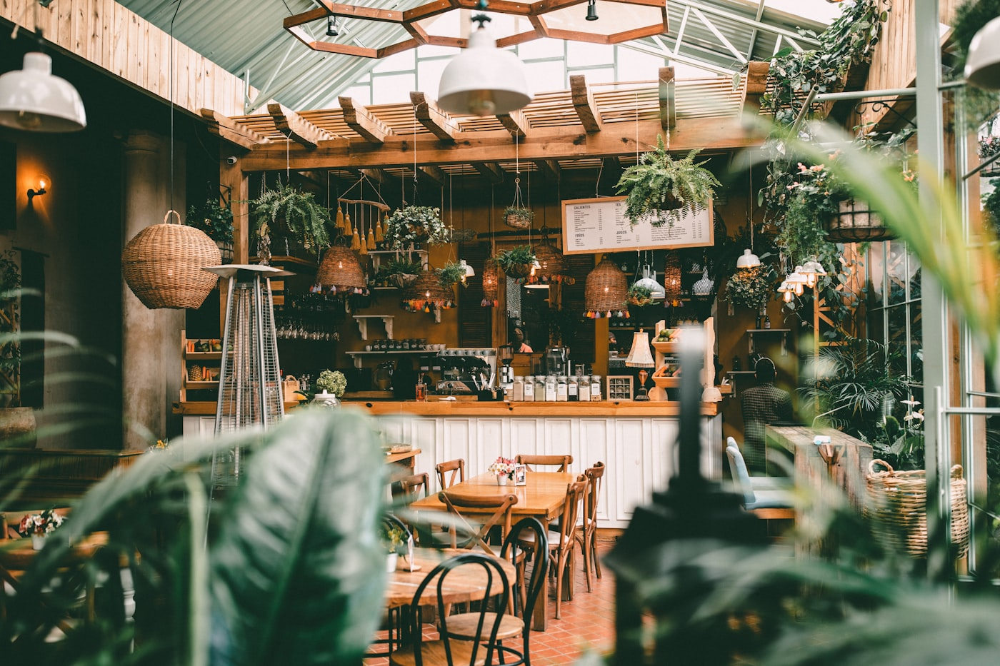
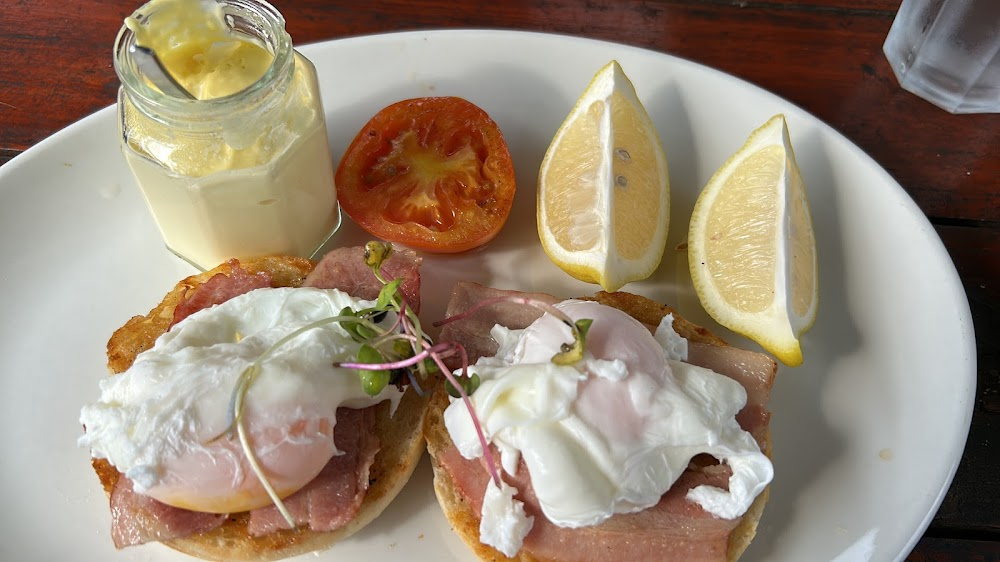
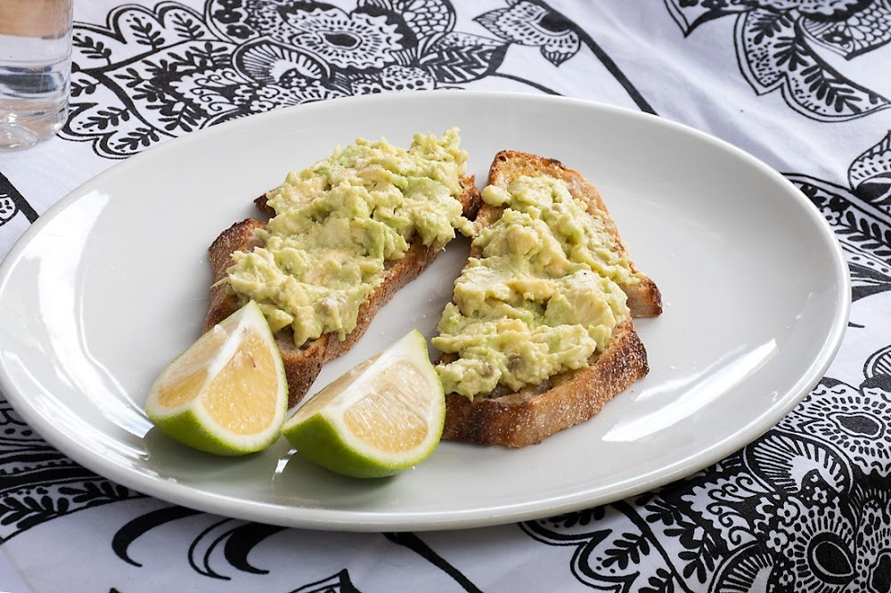
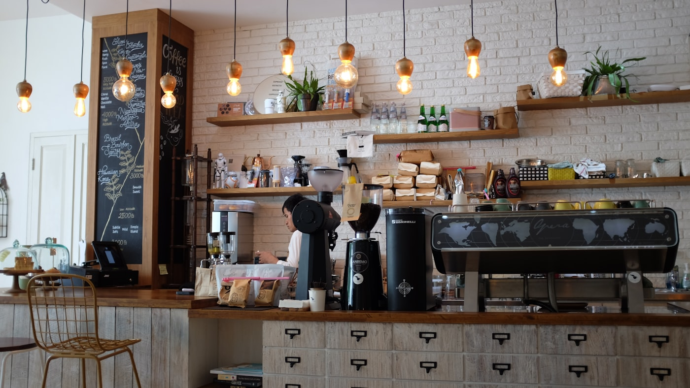

The space
A room that makes people stay a little longer.
We’ll re-grade the café’s own photos to one consistent look, no stock imagery.





Loved in the Upper Highway
4.5★
Google rating118
reviews & countingKloof
your localReal reviews shown as a placeholder; we’ll feature approved guest quotes once the café signs off.
Our story
Built on regulars, good beans and a warm welcome.
Steam & Cream has become an Upper Highway favourite the honest way, by getting the coffee right and treating every guest like a regular.
This is a short draft in the café’s own voice; the founders’ real story and details get added before launch.
DRAFT · awaiting client: founding story, owner names, team photoOwner / team photo
Visit / Book
Pop in, or book your table.
Kloof, Upper Highway, Durban
Trading hours: to confirm with café
DRAFT · awaiting client: hours, address, booking method, catering enquiry inbox